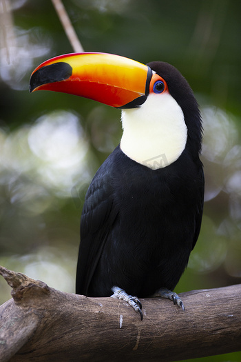
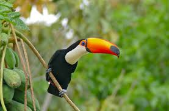
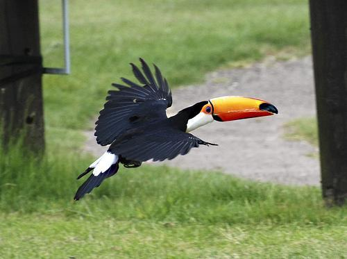
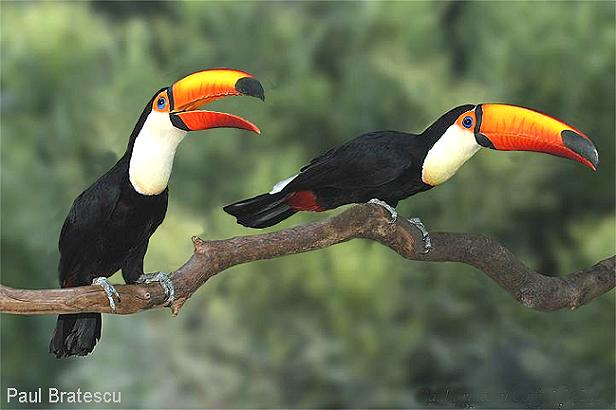

認識我
小小秘密
互動遊戲
生活影像

🆔 名字： 大巨嘴鳥 (Toco Toucan)
🏠 住址： 南美洲的熱帶雨林樹冠層
🍴 愛吃： 甜甜的水果或小昆蟲
🏅 專長： 有著厲害的飛行與精準接果實的技術
🔊 點我來聽聽我的叫聲
🔍 身體特徵
● 巨大的嘴巴
我的橘色嘴巴雖然看起來很重，但裡面像海綿一樣有很多洞洞，其實非常輕喔，同時還幫我散熱喔！
● 靈活的腳趾
我的腳趾是兩隻在前、兩隻在後，可以像夾子一樣緊緊抓住樹枝。
● 鮮豔的眼妝
我的眼睛周圍有一圈漂亮的顏色，讓我看起來畫著美麗眼妝看起來更有精神！
💡 點點看，找秘密！
❓
我的嘴巴有什麼作用？
(點一下翻開看答案)✨ 是我的行走冷氣機！
巨大的嘴巴可以幫我散熱，就像家裡的散熱片一樣，讓我在熱帶雨林裡不會中暑！
💤
我睡覺時嘴巴放哪裡？
(點一下翻開看答案)✨ 其實是我藏在羽毛裡！
我睡覺時會把大嘴巴轉到背後，縮進翅膀裡，看起來就像一顆黑色的圓球！
🎮 找找我的家

我最喜歡待在溫暖且茂密的森林裡...
請低頭找找看，哪一個積木是我的家？
🖼️ 影像牆


